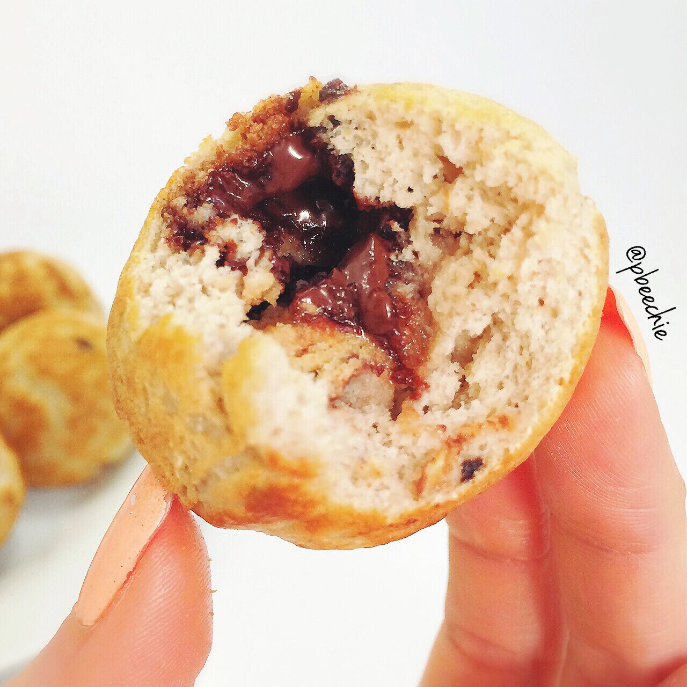

Cookie Dough Stuffed Pancake Puffs
This is what I did on my day off for Veteran's Day :p Pancake puffs! I filmed the process of making this finally! I've had soo many people ask me to show how these are made since an ebelskiver pan isn't very common (especially in the US). However, it totally should be more common. You can get an ebelskiver pan online, and the types of pancake puffs you can make with it is endless. It’s great.
I went to the farmer's market, cooked, and played league of legends. I always used to say I wanted to play League with Jesse, but never had time. But now I magically have all this time to play? Nope. Same amount of no time at all; I just seem to push off everything else ahahah. I'm kind of addicted to League now. Play with me - pbeechie, duh.

Cookie Dough Stuffed Pancake Puffs
Makes: 6-7
-
1/3 cup raw old fashioned oats
-
1/2 scoop cookie dough protein powder
-
1 TBSP coconut flour
-
2-3 TBSP water
-
2 egg whites
-
1/2 tsp baking powder
-
1 stevia packet
-
1/2 bar of sugar free chocolate
-
Grind your oats into a flour. Then add the remaining ingredients except for the quest bar and chocolate. Blend again. This is your batter.
-
Cut 1 cookie dough Quest bar into 8 pieces. Except you only need 7 so EAT DAT extra.
-
Begin to heat an ebelskiver pan. If you don’t have one, you can make these like pancakes. Spray the heated ebelskiver pan with a nonstick spray, fill a position 1/2 way with the pancake batter, place a piece of quest bar piece inside and a piece of the chocolate. Then cover it with more batter. Repeat for all 7 positions on the pan.
-
Once the bottoms are lightly brown, flip to cook the other side. Once lightly browned on the second side, remove!